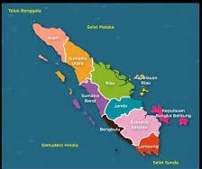

SUMATERA adalah pulau keenam terbesar di dunia yang terletak di Indonesia, dengan luas 443.065,8 km2. Penduduk pulau ini sekitar 52.210.926 (sensus 2010). Pulau ini dikenal pula dengan nama lain yaitu Pulau Percha, Andalas, atau Suwarnadwipa (bahasa Sanskerta, berarti “pulau emas”). Kemudian pada Prasasti Padang Roco tahun 1286 dipahatkan swarnnabhūmi (bahasa Sanskerta, berarti “tanah emas”) dan bhūmi mālayu (“Tanah Melayu”) untuk menyebut pulau ini. Selanjutnya dalam naskah Negarakertagama dari abad ke-14 juga kembali menyebut “Bumi Malayu” (Melayu) untuk pulau ini.
Asal nama Sumatera berawal dari keberadaaan Kerajaan Samudera (terletak di pesisir timur Aceh). Diawali dengan kunjungan Ibnu Batutah, petualang asal Maroko ke negeri tersebut pada tahun 1345, dia melafalkan kata Samudera menjadi Samatrah, dan kemudian menjadi Sumatra atau Sumatera, selanjutnya nama ini tercantum dalam peta-peta abad ke-16 buatan Portugis, untuk dirujuk pada pulau ini, sehingga kemudian dikenal meluas sampai sekarang.
Nama asli Sumatera, sebagaimana tercatat dalam sumber-sumber sejarah dan cerita-cerita rakyat, adalah “Pulau Emas”. Istilah Pulau Ameh (bahasa Minangkabau, berarti pulau emas) kita jumpai dalam cerita Cindua Mato dari Minangkabau. Dalam cerita rakyat Lampung tercantum nama tanoh mas untuk menyebut pulau Sumatera. Seorang musafir dari Cina yang bernama I-tsing (634-713), yang bertahun-tahun menetap di Sriwijaya (Palembang sekarang) pada abad ke-7, menyebut Sumatera dengan nama chin-chou yang berarti “negeri emas”.
Dalam berbagai prasasti, Sumatera disebut dalam bahasa Sanskerta dengan istilah: Suwarnadwipa (“pulau emas”) atau Suwarnabhumi (“tanah emas”). Nama-nama ini sudah dipakai dalam naskah-naskah India sebelum Masehi. Naskah Buddha yang termasuk paling tua, Kitab Jataka, menceritakan pelaut-pelaut India menyeberangi Teluk Benggala ke Suwarnabhumi. Dalam cerita Ramayana dikisahkan pencarian Dewi Sinta, istri Rama yang diculik Rahwana, sampai ke Suwarnadwipa.
Para musafir Arab menyebut Sumatera dengan nama “Serendib” (tepatnya: “Suwarandib”), transliterasi dari nama Suwarnadwipa. Abu Raihan Al-Biruni, ahli geografi Persia yang mengunjungi Sriwijaya tahun 1030, mengatakan bahwa negeri Sriwijaya terletak di pulau Suwarandib. Namun ada juga orang yang mengidentifikasi Serendib dengan Srilangka, yang tidak pernah disebut Suwarnadwipa.
Di kalangan bangsa Yunani purba, Sumatera sudah dikenal dengan nama Taprobana. Nama Taprobana Insula telah dipakai oleh Klaudios Ptolemaios, ahli geografi Yunani abad kedua Masehi, tepatnya tahun 165, ketika dia menguraikan daerah Asia Tenggara dalam karyanya Geographike Hyphegesis. Ptolemaios menulis bahwa di pulau Taprobana terdapat negeri Barousai. Mungkin sekali negeri yang dimaksudkan adalah Barus di pantai barat Sumatera, yang terkenal sejak zaman purba sebagai penghasil kapur barus.
Naskah Yunani tahun 70, Periplous tes Erythras Thalasses, mengungkapkan bahwa Taprobana juga dijuluki chryse nesos, yang artinya ‘pulau emas’. Sejak zaman purba para pedagang dari daerah sekitar Laut Tengah sudah mendatangi Nusantara, terutama Sumatera. Di samping mencari emas, mereka mencari kemenyan (Styrax sumatrana) dan kapur barus (Dryobalanops aromatica) yang saat itu hanya ada di Sumatera. Sebaliknya, para pedagang Nusantara pun sudah menjajakan komoditi mereka sampai ke Asia Barat dan Afrika Timur, sebagaimana tercantum pada naskah Historia Naturalis karya Plini abad pertama Masehi.
Dalam kitab umat Yahudi, Melakim (Raja-raja), fasal 9, diterangkan bahwa Nabi Sulaiman a.s. raja Israil menerima 420 talenta emas dari Hiram, raja Tirus yang menjadi bawahan beliau. Emas itu didapatkan dari negeri Ofir. Kitab Al-Qur’an, Surat Al-Anbiya’ 81, menerangkan bahwa kapal-kapal Nabi Sulaiman berlayar ke “tanah yang Kami berkati atasnya” (al-ardha l-lati barak-Na fiha).
Banyak ahli sejarah yang berpendapat bahwa negeri Ophir itu terletak di Sumatera (Gunung Ophir di Pasaman Barat, Sumatera Barat yang sekarang bernama Gunung Talamau?). Perlu dicatat, kota Tirus merupakan pusat pemasaran barang-barang dari Timur Jauh. Ptolemaios pun menulis Geographike Hyphegesis berdasarkan informasi dari seorang pedagang Tirus yang bernama Marinus. Dan banyak petualang Eropa pada abad ke-15 dan ke-16 mencari emas ke Sumatera dengan anggapan bahwa di sanalah letak negeri Ofir Nabi Sulaiman a.s.
Kata yang pertama kali menyebutkan nama Sumatra berasal dari gelar seorang raja Sriwijaya Haji (raja) Sumatrabhumi (“Raja tanah Sumatra”), berdasarkan berita China ia mengirimkan utusan ke China pada tahun 1017. Pendapat lain menyebutkan nama Sumatera berasal dari nama Samudera, kerajaan di Aceh pada abad ke-13 dan abad ke-14. Para musafir Eropa sejak abad ke-15 menggunakan nama kerajaan itu untuk menyebut seluruh pulau. Sama halnya dengan pulau Kalimantan yang disebut Borneo, dari nama Brunai, daerah bagian utara pulau itu yang mula-mula didatangi orang Eropa. Demikian pula pulau Lombok tadinya bernama Selaparang, sedangkan Lombok adalah nama daerah di pantai timur pulau Selaparang yang mula-mula disinggahi pelaut Portugis.
Peralihan Samudera (nama kerajaan) menjadi Sumatera (nama pulau) menarik untuk ditelusuri. Odorico da Pordenone dalam kisah pelayarannya tahun 1318 menyebutkan bahwa dia berlayar ke timur dari Koromandel, India, selama 20 hari, lalu sampai di kerajaan Sumoltra. Ibnu Bathutah bercerita dalam kitab Rihlah ila l-Masyriq (Pengembaraan ke Timur) bahwa pada tahun 1345 dia singgah di kerajaan Samatrah. Pada abad berikutnya, nama negeri atau kerajaan di Aceh itu diambil alih oleh musafir-musafir lain untuk menyebutkan seluruh pulau.
Pada tahun 1490 Ibnu Majid membuat peta daerah sekitar Samudera Hindia dan di sana tertulis pulau “Samatrah”. Peta Ibnu Majid ini disalin oleh Roteiro tahun 1498 dan muncullah nama “Camatarra”. Peta buatan Amerigo Vespucci tahun 1501 mencantumkan nama “Samatara”, sedangkan peta Masser tahun 1506 memunculkan nama “Samatra”. Ruy d’Araujo tahun 1510 menyebut pulau itu “Camatra”, dan Alfonso Albuquerque tahun 1512 menuliskannya “Camatora”. Antonio Pigafetta tahun 1521 memakai nama yang agak ‘benar’: “Somatra”. Tetapi sangat banyak catatan musafir lain yang lebih ‘kacau’ menuliskannya: “Samoterra”, “Samotra”, “Sumotra”, bahkan “Zamatra” dan “Zamatora”.
Catatan-catatan orang Belanda dan Inggris, sejak Jan Huygen van Linschoten dan Sir Francis Drake abad ke-16, selalu konsisten dalam penulisan Sumatera. Bentuk inilah yang menjadi baku, dan kemudian disesuaikan dengan lidah Indonesia: Sumatera
Penduduk
Secara umum, pulau Sumatera didiami oleh bangsa Melayu, yang terbagi ke dalam beberapa suku. Suku-suku besar ialah Aceh, Batak, Melayu, Minangkabau, Besemah, Suku Rejang, Ogan, Komering, dan Lampung. Di wilayah pesisir timur Sumatera dan di beberapa kota-kota besar seperti Medan, Batam, Palembang,Pekanbaru, dan Bandar Lampung, banyak bermukim etnis Tionghoa. Penduduk pulau Sumatera hanya terkonsentrasi di wilayah Sumatera Timur dan dataran tinggi Minangkabau. Mata pencaharian penduduk Sumatera sebagian besar sebagai petani, nelayan, dan pedagang.
Penduduk Sumatera mayoritas beragama Islam dan sebagian kecil merupakan penganut ajaran Kristen Protestan, terutama di wilayah Tapanuli dan Toba-Samosir, Sumatera Utara. Di wilayah perkotaan, seperti Medan, Pekanbaru, Batam, Pangkal Pinang, Palembang, dan Bandar Lampung dijumpai beberapa penganut Buddha.
Beranda